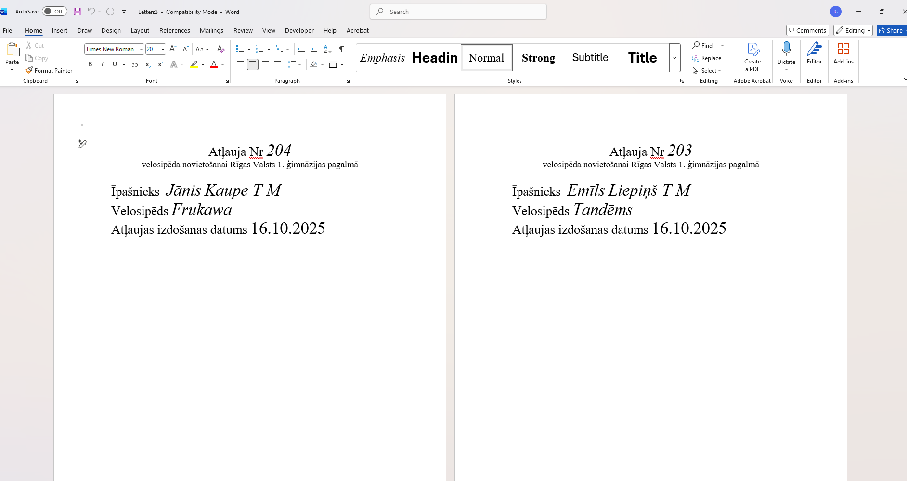
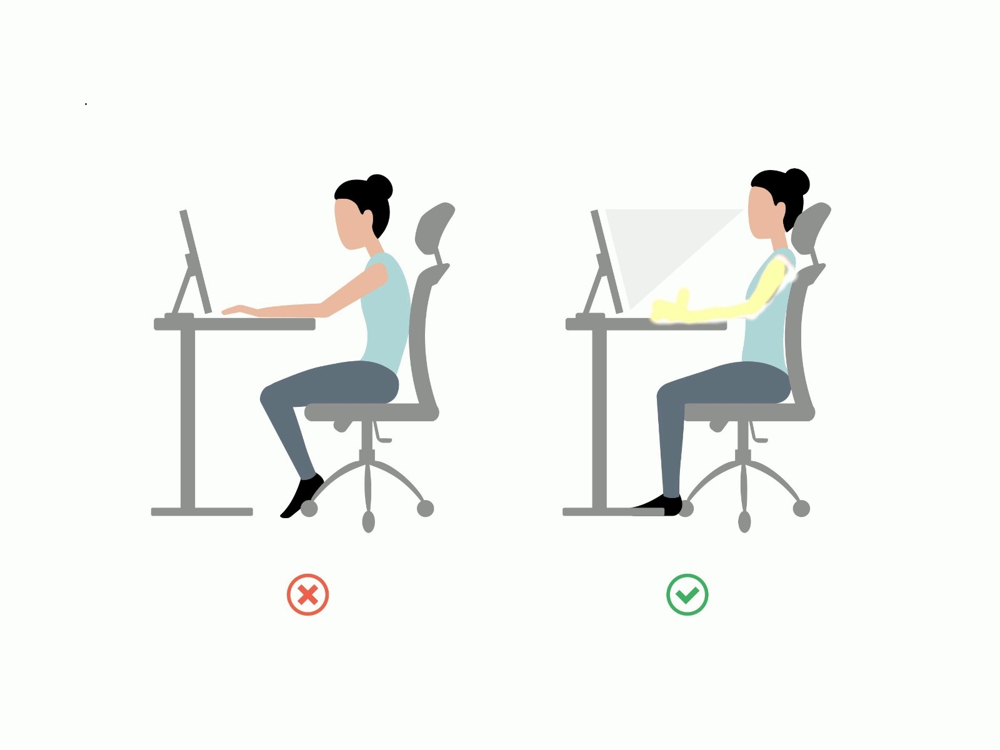
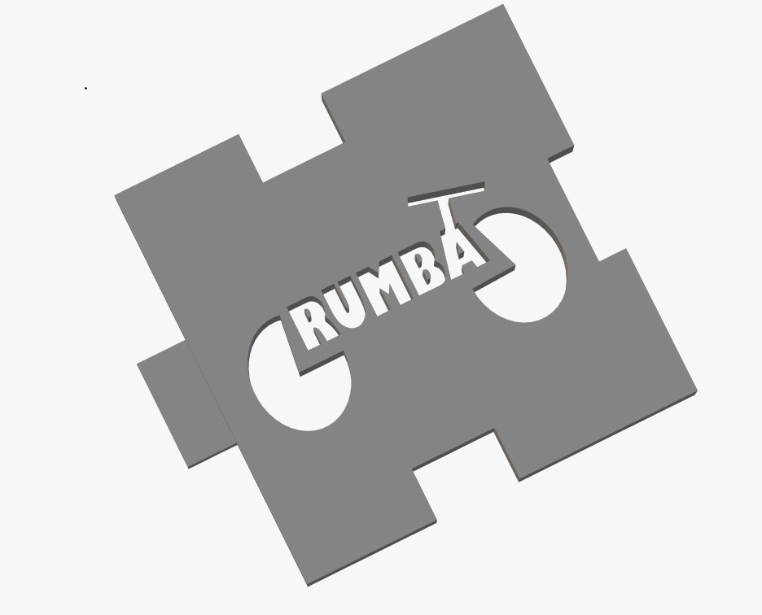

Mēs veicām Tekstapstrādi aplikācijā "Word"

Aplikācijā "GIMP" mēs izveidojām gif par mūsu tēmu.

Aplikācijā "InkScape" mēs izveidojām logo kubam, kas tika izmantots kuba skladnei. To var redzēt nakamajā bildē.
Mums vajadzēja veidot kubu aplikācijā "TinkerCAD".

Izveidotais video par kuba veidošanu
Links uz excel failu.